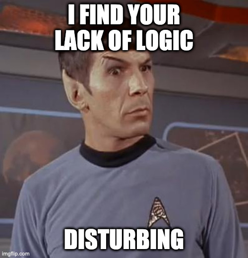
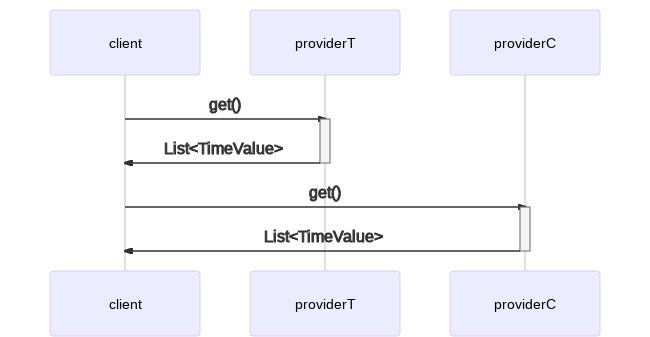

Il codice completo di tutti gli esempi si trova qui.
Come lanciare il programma
mvn clean compile verify exec:java
Prefazione
Supponiamo di voler calcolare un indice di qualità dell’aria basato su due valori:
- temperatura dell’aria
- percentuale di monossido di carbonio nell’aria
Dati i seguenti simboli:
| simbolo | significato |
|---|---|
AQi | indice di qualità dell’aria |
T | temperatura dell’aria in gradi Celsius |
Tm | temperatura massima dell’aria in C° |
C | percentuale di monossido di carbonio nell’aria |
Possiamo calcolare l’AQi con questa specie di formula:

DISCLAIMER: questa formula non è in alcun modo scientifica ed è da intendersi esclusivamente a scopo educativo. Non voglio che ambientalisti e veri scienziati mi vengano a cercare a casa con formule matematiche e accuse di stregoneria. E poi ho visto una scusa per una fantastica equazione in LaTeX e ne ho approfittato, per motivi estetici e perché mi fa sembrare intelligente, cosa che certamente non sono1.
Ciò che la formula prova a esprimere è che al salire di temperatura e percentuale di monossido di carbonio, la qualità dell’aria decresce. Sì, tutto ciò è totalmente anti-scientifico ma vedrete che ha senso ai fini della mia argomentazione.
Assumiamo una temperatura massima di 40C°. Quindi, ad esempio:
$ bc -l
bc 1.06
Copyright 1991-1994, 1997, 1998, 2000 Free Software Foundation, Inc.
This is free software with ABSOLUTELY NO WARRANTY.
For details type 'warranty'.
t=60; c=100; tm=40; (((t * 100) / tm) + c) / 2
125.00000000000000000000
t=60; c=50; tm=40; (((t * 100) / tm) + c) / 2
100.00000000000000000000
t=40; c=50; tm=40; (((t * 100) / tm) + c) / 2
75.00000000000000000000
t=40; c=10; tm=40; (((t * 100) / tm) + c) / 2
55.00000000000000000000
t=20; c=10; tm=40; (((t * 100) / tm) + c) / 2
30.00000000000000000000
t=10; c=5; tm=40; (((t * 100) / tm) + c) / 2
15.00000000000000000000
t=10; c=0.5; tm=40; (((t * 100) / tm) + c) / 2
12.75000000000000000000
Da questo possiamo derivare la seguente tabella totalmente anti-scientifica:
| AQi | significato |
|---|---|
| da 125 a ∞ | morte orribile |
| da 100 a 125 | morte dolorosa |
| da 75 a 100 | morte |
| da 55 a 75 | è accettabile2 |
| da 30 a 55 | va bene così3 |
| da 15 a 30 | si sta bene |
| da 12.75 a 15 | freschetto |
| da -∞ a 12.75 | benvenuto a Yakutsk, probabilmente |
Service provider
Supponiamo di avere dei servizi internet che espongano dati di monitoring riguardo temperatura e livelli di monossido di carbonio. Questi servizi potrebbero esporre un’api che ci dà una serie di dati di tipo time series4.
Quindi, ad esempio, potremmo chiamare un servizio di monitoring della temperatura, e il servizio ci risponderebbe con una serie di dati time series come questi:
| timestamp | valore |
|---|---|
2021-01-20T08:00:00Z | 10.1 |
2021-01-20T08:02:00Z | 10.3 |
2021-01-20T08:05:00Z | 10.7 |
2021-01-20T08:06:00Z | 10.9 |
2021-01-20T08:06:19Z | 11.0 |
2021-01-20T08:06:42Z | 11.1 |
2021-01-20T08:09:00Z | 11.3 |
Un servizio di monitoring della percentuale di monossido di carbonio potrebbe invece rispondere con dati simili:
| timestamp | valore |
|---|---|
2021-01-20T08:01:00Z | 2.0 |
2021-01-20T08:02:00Z | 2.3 |
2021-01-20T08:06:00Z | 2.8 |
2021-01-20T08:07:00Z | 2.9 |
2021-01-20T08:08:00Z | 3.3 |
Ti prego di notare che ho ordinato i dati per timestamp in modo da renderli un po’ più leggibili, ma non dovresti fare assunzioni sul tipo di ordinamento dei dati tornati da un provider esterno. Non che ciò sia di alcuna importanza perché…
L’algoritmo
…il nostro algoritmo ora richiede di:
- concatenare i dati di temperatura e percentuale di monossido di carbonio
- ordinare per timestamp
| id | timestamp | valore | tipo |
|---|---|---|---|
1 | 2021-01-20T08:00:00Z | 10.1 | T |
2 | 2021-01-20T08:01:00Z | 2.0 | C |
3 | 2021-01-20T08:02:00Z | 10.3 | T |
4 | 2021-01-20T08:02:00Z | 2.3 | C |
5 | 2021-01-20T08:05:00Z | 10.7 | T |
6 | 2021-01-20T08:06:00Z | 10.9 | T |
7 | 2021-01-20T08:06:00Z | 2.8 | C |
8 | 2021-01-20T08:06:19Z | 11.0 | T |
9 | 2021-01-20T08:06:42Z | 11.1 | T |
10 | 2021-01-20T08:07:00Z | 2.9 | C |
11 | 2021-01-20T08:08:00Z | 3.3 | C |
12 | 2021-01-20T08:09:00Z | 11.3 | T |
tipo: T sta per temperatura e C per percentuale di monossido di carbonio
Il nostro compito ora è di scandire i dati, cominciando dall’inizio, una riga alla volta, computando l’indice di qualità dell’aria man mano che andiamo avanti, un passo per volta.
La prima cosa da notare qui è che per calcolare la formula del nostro AQi,
abbiamo bisogno di avere entrambi i valori per T e C. In altre parole, il
primo punto in cui possiamo applicare la nostra formula è quello con id 2, dal
momento che abbiamo un valore per T nell’id 1 e un valore per C nell’id
2. Quindi prendiamo i nostri valori (10.1 per T e 2.0 per C),
applichiamo la formula, ed abbiamo un primo valore per AQi di 13.625 che
associamo con il timestamp nell’id 2, poiché quello è il momento cui si
riferisce la nostra computazione. La nostra prima entry di AQi nella serie
risultante deve essere così:
| timestamp | valore |
|---|---|
2021-01-20T08:01:00Z | 13.625 |
D’ora in poi, la nostra formula può essere applicata per ogni elemento rimanente nella serie, tenendo presente che dobbiamo correlare ogni valore con il valore più recente dell’altro tipo. In altre parole:
| per l’id | prendi i valori dagli id |
|---|---|
2 | 1, 2 |
3 | 2, 3 |
4 | 3, 4 |
5 | 4, 5 |
6 | 4, 6 |
7 | 6, 7 |
8 | 7, 8 |
9 | 7, 9 |
10 | 9, 10 |
11 | 9, 11 |
12 | 11, 12 |
Puoi pensare a questo tipo di movimento come a una
rolling time window
poiché hai una finestra che si muove nel tempo focalizzandosi sui dati più
recenti per le nostre specifiche misure di T e C ad ogni passo5.
Rolling Time Window
Vai avanti, scrolla in basso. Dovresti vederla.
Step 01: T = 10.1, C = 2.0, AQi = 13.625
| id | 1 | 2 | 3 | 4 | 5 | 6 | 7 | 8 | 9 | 10 | 11 | 12 |
|---|---|---|---|---|---|---|---|---|---|---|---|---|
| T | 10.1 | 10.3 | 10.7 | 10.9 | 11.0 | 11.1 | 11.3 | |||||
| C | 2.0 | 2.3 | 2.8 | 2.9 | 3.3 |
Finestra: id 1-2
Step 02: T = 10.3, C = 2.0, AQi = 13.875
| id | 1 | 2 | 3 | 4 | 5 | 6 | 7 | 8 | 9 | 10 | 11 | 12 |
|---|---|---|---|---|---|---|---|---|---|---|---|---|
| T | 10.1 | 10.3 | 10.7 | 10.9 | 11.0 | 11.1 | 11.3 | |||||
| C | 2.0 | 2.3 | 2.8 | 2.9 | 3.3 |
Finestra: id 2-3
Step 03: T = 10.3, C = 2.3, AQi = 14.025
| id | 1 | 2 | 3 | 4 | 5 | 6 | 7 | 8 | 9 | 10 | 11 | 12 |
|---|---|---|---|---|---|---|---|---|---|---|---|---|
| T | 10.1 | 10.3 | 10.7 | 10.9 | 11.0 | 11.1 | 11.3 | |||||
| C | 2.0 | 2.3 | 2.8 | 2.9 | 3.3 |
Finestra: id 3-4
Step 04: T = 10.7, C = 2.3, AQi = 14.525
| id | 1 | 2 | 3 | 4 | 5 | 6 | 7 | 8 | 9 | 10 | 11 | 12 |
|---|---|---|---|---|---|---|---|---|---|---|---|---|
| T | 10.1 | 10.3 | 10.7 | 10.9 | 11.0 | 11.1 | 11.3 | |||||
| C | 2.0 | 2.3 | 2.8 | 2.9 | 3.3 |
Finestra: id 4-5
Step 05: T = 10.9, C = 2.3, AQi = 14.775
| id | 1 | 2 | 3 | 4 | 5 | 6 | 7 | 8 | 9 | 10 | 11 | 12 |
|---|---|---|---|---|---|---|---|---|---|---|---|---|
| T | 10.1 | 10.3 | 10.7 | 10.9 | 11.0 | 11.1 | 11.3 | |||||
| C | 2.0 | 2.3 | 2.8 | 2.9 | 3.3 |
Finestra: id 4-6
Step 06: T = 10.9, C = 2.8, AQi = 15.025
| id | 1 | 2 | 3 | 4 | 5 | 6 | 7 | 8 | 9 | 10 | 11 | 12 |
|---|---|---|---|---|---|---|---|---|---|---|---|---|
| T | 10.1 | 10.3 | 10.7 | 10.9 | 11.0 | 11.1 | 11.3 | |||||
| C | 2.0 | 2.3 | 2.8 | 2.9 | 3.3 |
Finestra: id 6-7
Step 07: T = 11.0, C = 2.8, AQi = 15.150
| id | 1 | 2 | 3 | 4 | 5 | 6 | 7 | 8 | 9 | 10 | 11 | 12 |
|---|---|---|---|---|---|---|---|---|---|---|---|---|
| T | 10.1 | 10.3 | 10.7 | 10.9 | 11.0 | 11.1 | 11.3 | |||||
| C | 2.0 | 2.3 | 2.8 | 2.9 | 3.3 |
Finestra: id 7-8
Step 08: T = 11.1, C = 2.8, AQi = 15.275
| id | 1 | 2 | 3 | 4 | 5 | 6 | 7 | 8 | 9 | 10 | 11 | 12 |
|---|---|---|---|---|---|---|---|---|---|---|---|---|
| T | 10.1 | 10.3 | 10.7 | 10.9 | 11.0 | 11.1 | 11.3 | |||||
| C | 2.0 | 2.3 | 2.8 | 2.9 | 3.3 |
Finestra: id 7-9
Step 09: T = 11.1, C = 2.9, AQi = 15.325
| id | 1 | 2 | 3 | 4 | 5 | 6 | 7 | 8 | 9 | 10 | 11 | 12 |
|---|---|---|---|---|---|---|---|---|---|---|---|---|
| T | 10.1 | 10.3 | 10.7 | 10.9 | 11.0 | 11.1 | 11.3 | |||||
| C | 2.0 | 2.3 | 2.8 | 2.9 | 3.3 |
Finestra: id 9-10
Step 10: T = 11.1, C = 3.3, AQi = 15.525
| id | 1 | 2 | 3 | 4 | 5 | 6 | 7 | 8 | 9 | 10 | 11 | 12 |
|---|---|---|---|---|---|---|---|---|---|---|---|---|
| T | 10.1 | 10.3 | 10.7 | 10.9 | 11.0 | 11.1 | 11.3 | |||||
| C | 2.0 | 2.3 | 2.8 | 2.9 | 3.3 |
Finestra: id 9-11
Step 11: T = 11.3, C = 3.3, AQi = 15.775
| id | 1 | 2 | 3 | 4 | 5 | 6 | 7 | 8 | 9 | 10 | 11 | 12 |
|---|---|---|---|---|---|---|---|---|---|---|---|---|
| T | 10.1 | 10.3 | 10.7 | 10.9 | 11.0 | 11.1 | 11.3 | |||||
| C | 2.0 | 2.3 | 2.8 | 2.9 | 3.3 |
Finestra: id 11-12
Dato quanto sopra, la nostra time series completa per l’AQi è:
| timestamp | valore |
|---|---|
2021-01-20T08:01:00Z | 13.625 |
2021-01-20T08:02:00Z | 13.875 |
2021-01-20T08:02:00Z | 14.025 |
2021-01-20T08:05:00Z | 14.525 |
2021-01-20T08:06:00Z | 14.775 |
2021-01-20T08:06:00Z | 15.025 |
2021-01-20T08:06:19Z | 15.150 |
2021-01-20T08:06:42Z | 15.275 |
2021-01-20T08:07:00Z | 15.325 |
2021-01-20T08:08:00Z | 15.525 |
2021-01-20T08:09:00Z | 15.775 |
Se hai guardato attentamente, potresti aver notato che abbiamo un paio di
timestamp duplicati nei risultati, nello specifico 2021-01-20T08:02:00Z e
2021-01-20T08:06:00Z. Questi rappresentano un paradosso temporale poiché
sembra che il nostro AQi abbia due diversi valori allo stesso istante.

Entrambi sappiamo che questi dati finiranno su una pagina web. Non vorrai certo che uno di quegli sviluppatori hipster del frontend ci faccia notare una mancanza di logica o, peggio, una inconsistenza nei nostri dati, vero?
Ne ero certo. Dunque, la mia idea è che possiamo tranquillamente scartare la
prima entry di un timestamp duplicato poiché si riferisce a un calcolo con dati
vecchi. Perché? Be’, considera i valori del primo timestamp duplicato:
2021-01-20T08:02:00Z. La prima volta che abbiamo calcolato l’AQi, abbiamo
preso i dati dagli id 2 e 3 e l’id 2 si riferisce a un timestamp
precedente, nello specifico 2021-01-20T08:01:00Z. La seconda volta che abbiamo
calcolato l’AQi, abbiamo usato i dati dagli id 3 and 4, che si riferiscono
entrambi al timestamp 2021-01-20T08:02:00Z, quindi il risultato di questa
computazione è più rilevante del precedente per il quale abbiamo prodotto lo
stesso timestamp di 2021-01-20T08:02:00Z.
La stessa cosa si applica all’AQi con timestamp 2021-01-20T08:06:00Z poiché
la prima computazione stava usando gli id 4 e 6 mentre la seconda stava
considerando gli id 6 e 7 che sono più freschi del timestamp nell’id 4.
Quindi cancelliamo un paio di righe e il risultato pulito dovrebbe essere questo:
| timestamp | valore |
|---|---|
2021-01-20T08:01:00Z | 13.625 |
2021-01-20T08:02:00Z | 14.025 |
2021-01-20T08:05:00Z | 14.525 |
2021-01-20T08:06:00Z | 15.025 |
2021-01-20T08:06:19Z | 15.150 |
2021-01-20T08:06:42Z | 15.275 |
2021-01-20T08:07:00Z | 15.325 |
2021-01-20T08:08:00Z | 15.525 |
2021-01-20T08:09:00Z | 15.775 |
Proprio come un’equazione è un’ottima scusa per rispolverare un po’ di LaTeX, una buona serie di dati temporali è un eccellente candidato per gnuplot.

I dati nel mondo reale sono naturalmente molto più caotici di così e potresti voler normalizzare il risultato usando un intervallo temporale arbitrario, ad esempio un minuto:
| timestamp | valore |
|---|---|
2021-01-20T08:01:00Z | 13.625 |
2021-01-20T08:02:00Z | 14.025 |
2021-01-20T08:03:00Z | 14.025 |
2021-01-20T08:04:00Z | 14.025 |
2021-01-20T08:05:00Z | 14.525 |
2021-01-20T08:06:00Z | 15.025 |
2021-01-20T08:07:00Z | 15.325 |
2021-01-20T08:08:00Z | 15.525 |
2021-01-20T08:09:00Z | 15.775 |

Ha senso? Spero proprio di sì.

Scriviamo il codice
Scriviamo un po’ di codice. Prima di tutto, definiamo un’interfaccia per il
nostro calcolatore di AQi, così che poi possiamo fornirne diverse
implementazioni.
Il codice di questa interfaccia può essere visto qui.
L’interfaccia è un posto conveniente dove implementare la formula dell’AQi:
static double airQualityIndex(double temperature, double carbonMonoxidePercentage, double maxTemperature) {
return (((temperature * 100) / maxTemperature) + carbonMonoxidePercentage) / 2;
}
Questo metodo prende una temperatura, una percentuale di monossido di carbonio,
una temperatura massima e torna l’AQi. Bene.
La parte interessante però è in questo metodo:
List<TimeValue> calculate(List<TimeValue> temperatures, List<TimeValue> carbonMonoxidePercentages);
Questo ci dice che il metodo calculate prende due liste di TimeValue: la
prima è una lista di temperature e l’altra è una lista di percentuali di
monossido di carbonio. Quindi ritorna una lista di TimeValue, solo che questa
volta la lista rappresenta gli indici di qualità dell’aria.
Cos’è un TimeValue? Possiamo vedere la sua definizione
qui.
Nonostante tutto ciò sembri orribilmente complicato per via della verbosità del
linguaggio Java e alcuni dettagli di implementazione, puoi pensare a un
TimeValue come un modo comodo di rappresentare un Instant nel tempo ed il
suo valore associato. Niente di ché, davvero.
Scrivere codice come fosse il 1984
Ora che abbiamo un semplice framework per i nostri calcoli, scriviamo una prima implementazione usando uno stile vecchia scuola. Il codice completo è qui. Diamogli un’occhiata.
Il nostro calcolatore prende la temperatura massima nel costruttore e ne
immagazina il valore nella costante d’istanza maxTemperature poiché ci servirÃ
dopo quando invocheremo la funzione per l’AQi.
Il nostro metodo calculate deve iniziare con questi due step:
- concatenare i dati di temperatura e percentuale di monossido di carbonio in una singola struttura dati
- ordinare il risultato per timestamp
Il primo passo è implementato in questo blocco di codice:
// key = time value type (C = carbonMonoxidePercentage, T = temperature)
// concatenated with the timestamp as a string
Map<String, TimeValue> timeValuesByType = new HashMap<>();
for (TimeValue temperature : temperatures) {
timeValuesByType.put("T".concat(temperature.ts()), temperature);
}
for (TimeValue carbonMonoxidePercentage : carbonMonoxidePercentages) {
timeValuesByType.put("C".concat(carbonMonoxidePercentage.ts()), carbonMonoxidePercentage);
}
La chiave nella nostra variabile timeValuesByType è una concatenazione in
stringa della lettera T per temperatura o C per percentuale di monossido di
carbonio, seguita dal timestamp. Dobbiamo fare ciò per poter poi distinguere tra
i due tipi di dato più avanti. Le stringhe nella chiave avranno questo aspetto:
T2021-02-03T08:00:00.000Z.
L’ordinamento è realizzato in questo blocco:
Map<String, TimeValue> timeValuesByTypeSortedByTimestamp = new LinkedHashMap<>();
List<String> keysSortedByTimestamp = new ArrayList<>(timeValuesByType.keySet());
keysSortedByTimestamp.sort(comparing(s -> timeValuesByType.get(s).timestamp()));
for (String key : keysSortedByTimestamp) {
timeValuesByTypeSortedByTimestamp.put(key, timeValuesByType.get(key));
}
Questo è solo il modo supercomplicato di Java per ordinare la nostra mappa in
base al timestamp che abbiamo nei valori della mappa stessa. Dichiariamo una
mappa timeValuesByTypeSortedByTimestamp, implementata da una LinkedHashMap
poiché vogliamo preservare l’ordine di iterazione delle entry della mappa. Poi
inglobiamo tutte le chiavi della nostra mappa originaria timeValuesByType in
un ArrayList dato che abbiamo bisogno di una List per poterci invocare sort.
La funzione di comparazione che passiamo a sort pesca il timestamp dell’entry
relativa nella mappa originale che abbiamo chiamato timeValuesByType. Quindi
iteriamo keysSortedByTimestamp, aggiungendo entry alla nostra mappa
timeValuesByTypeSortedByTimestamp.
Ora dichiariamo una mappa per i risultati dei nostri calcoli dell’AQi e un
paio di variabili che ci serviranno dopo:
Map<Instant, Double> airQualityIndexMap = new HashMap<>();
TimeValue lastTemperature = null;
TimeValue lastCarbonMonoxidePercentage = null;
Qui inizia la parte divertente. Cicliamo attraverso le entry della mappa nella
nostra variabile timeValuesByTypeSortedByTimestamp precedentemente definita.
for (Map.Entry<String, TimeValue> entry : timeValuesByTypeSortedByTimestamp.entrySet()) {
...
Sappiamo che se la chiave inizia con una T, abbiamo un valore di temperatura
e, in tal caso lo immagazziniamo nella variabile lastTemperature. Altrimenti,
il valore deve essere di tipo C per carbonio, e quindi facciamo la stessa cosa
per la variabile lastCarbonMonoxidePercentage.
if (entry.getKey().startsWith("T")) {
lastTemperature = entry.getValue();
} else if (entry.getKey().startsWith("C")) {
lastCarbonMonoxidePercentage = entry.getValue();
}
A questo punto, se abbiamo un valore sia per T che per C, possiamo procedere
a calcolare il nostro AQi e memorizzare il suo valore nella variabile
airQualityIndexMap.
if (lastTemperature != null && lastCarbonMonoxidePercentage != null) {
airQualityIndexMap.put(
mostRecent(lastTemperature.timestamp(), lastCarbonMonoxidePercentage.timestamp()),
airQualityIndex(lastTemperature.value(), lastCarbonMonoxidePercentage.value(), maxTemperature)
);
}
Stiamo prendendo il timestamp più recente tra i due TimeValue usando una
funzioncina di aiuto che abbiamo definito precedentemente nell’interfaccia del
calcolatore.
Un effetto collaterale desiderato dell’usare una mappa per questa struttura dati è che, quando inseriamo un nuovo valore per un timestamp esistente, la entry viene sovrascritta dal più recente. Questo risolve il nostro problema dei timestamp duplicati.
Alla fine del ciclo, i nostri risultati sono quasi pronti. Dobbiamo solo
ordinarli di nuovo per timestamp e ritornare i valori come una List di
TimeValue.
List<Instant> keys = new ArrayList<>(airQualityIndexMap.keySet());
keys.sort(Instant::compareTo);
List<TimeValue> results = new ArrayList<>();
for (Instant key : keys) {
results.add(TimeValue.of(key, airQualityIndexMap.get(key)));
}
Eleganza funzionale
Possiamo fare meglio di così? Certo. Usiamo un’arma elegante per tempi più civilizzati: la programmazione funzionale. Il nostro FunctionalAirQualityIndexCalculator è ridotto quasi all’osso, ma solo perché la logica principale dietro i calcoli ora si trova nell’AirQualityIndexCollector.
Il nostro calcolatore è molto più semplice ora. La prima parte è un po’ convoluta quindi guardiamola per prima:
List<TypedTimeValue> timeSeries = Stream.concat(
temperatures.stream().map(e -> new TypedTimeValue(TypedTimeValue.Type.T, e)),
carbonMonoxidePercentages.stream().map(e -> new TypedTimeValue(TypedTimeValue.Type.C, e))
).collect(Collectors.toUnmodifiableList());
Ci sono diversi pattern funzionali al lavoro qui:
-
i dati di temperatura e percentuale di monossido di carbonio sono trasmessi e mappati in un contenitore in modo da poter poi capire se il dato che stiamo guardando è di tipo
ToC -
i due stream risultanti sono concatenati usando
Stream.concat -
alla fine collezioniamo lo stream concatenato in una
List<TypedTimeValue>non modificabile
return timeSeries.stream().parallel()
.collect(AirQualityIndexCollector.toUnmodifiableList(maxTemperature));
La variabile timeSeries è quindi trasmessa in parallelo in un collettore che
fa il lavoro sporco e ritorna una List<TimeValue> non modificabile con gli
indici di qualità dell’aria.
Diamo un’occhiata al collettore.
public class AirQualityIndexCollector
implements Collector<TypedTimeValue, Queue<TypedTimeValue>, List<TimeValue>> {
...
Stiamo implementando l’interfaccia Collector. I parametri di tipo che stiamo
fornendo esprimono tre cose:
- stiamo collezionando valori di tipo
TypedTimeValue - il nostro accumulatore interno usa una
Queue<TypedTimeValue> - alla fine del lavoro, ritorniamo una
List<TimeValue>
Una Queue è solo una List thread safe. Ne forniamo l’implementazione usando
il metodo supplier:
@Override
public Supplier<Queue<TypedTimeValue>> supplier() {
return ConcurrentLinkedQueue::new;
}
In questo caso, l’implementazione è una ConcurrentLinkedQueue che, di nuovo, è
solo una specie di ArrayList thread safe.
@Override
public BiConsumer<Queue<TypedTimeValue>, TypedTimeValue> accumulator() {
return Queue::add;
}
L’accumulatore deve tornare una funzione che il collettore usa per accumulare i
dati in input. Come puoi vedere, torniamo semplicemente un riferimento al metodo
add di Queue.
@Override
public BinaryOperator<Queue<TypedTimeValue>> combiner() {
return (typedTimeValues, typedTimeValues2) -> {
typedTimeValues.addAll(typedTimeValues2);
return typedTimeValues;
};
}
Il metodo combiner deve tornare una funzione che combina due accumulatori.
L’implementazione deve prendere tutti gli elementi del secondo accumulatore ed
aggiungerli al primo, che non suona molto funzionale in termini di immutabilitÃ
ma in questo caso è un comportamento atteso, ed è totalmente ok.
@Override
public Function<Queue<TypedTimeValue>, List<TimeValue>> finisher() {
...
Infine, il finisher deve tornare una funzione che prende tutti i valori
accumulati nella nostra Queue<TypedTimeValue> e torna una List<TimeValue>
con i nostri indici di qualità dell’aria.
final Map<Instant, TimeValue> aqiAccumulator = new HashMap<>();
Questa è una mappa che serve a collezionare gli indici di qualità dell’aria. Come puoi vedere è indicizzata per timestamp, così che non avremo entry duplicate quando calcoli più recenti per uno stesso timestamp saranno messe nella mappa rimpiazzando quelle vecchie.
return accumulator -> {
accumulator.stream()
.map(TypedTimeValue::timestamp)
.sorted()
.forEach(entryTS -> {
final TimeValue lastTemperature = getClosest(accumulator, TypedTimeValue.Type.T, entryTS);
final TimeValue lastCarbonMonoxidePercentage = getClosest(accumulator, TypedTimeValue.Type.C, entryTS);
if (lastTemperature != null && lastCarbonMonoxidePercentage != null) {
Instant timestamp = mostRecent(lastTemperature.timestamp(), lastCarbonMonoxidePercentage.timestamp());
aqiAccumulator.put(timestamp, TimeValue.of(timestamp, airQualityIndex(lastTemperature.value(), lastCarbonMonoxidePercentage.value(), maxTemperature)));
}
});
return aqiAccumulator.values().stream()
.sorted()
.collect(Collectors.toUnmodifiableList());
};
Questo è un bel mappazzone di codice ma guardiamolo un po’ alla volta. Stiamo trasmettendo i dati accumulati, estraendo il timestamp, ordinando per questo e, per ogni timestamp, guardiamo ai dati di temperatura e percentuale di monossido di carbonio con il timestamp più vicino. Più vicino vuol dire che il timestamp che stiamo valutando deve essere precedente o uguale al timestamp in questione.
Se abbiamo entrambi i dati (T e C), possiamo procedere al calcolo dell’AQi
e mettere il suo valore nella mappa aqiAccumulator.
Infine, tutto quello che dobbiamo fare è prendere i valori nella mappa
aqiAccumulator, ordinarli per timestamp e collezionarli in una
List<TimeValue> non modificabile.
L’ordinamento è reso possibile dal fatto che la nostra classe TimeValue
implementa Comparable<TimeValue>.
Ci sono diversi punti nel metodo finisher in cui guardo dentro le strutture
dati su cui sto iterando, il ché, di nuovo, non sembra molto kosher in termini
di programmazione funzionale, ma è ok perché so che i dati che sto esaminando
non sono suscettibili a modifiche dietro le quinte da parte di thread
concorrenti.
Questo calcolatore è migliore di quello vecchia scuola? Non ne sono sicuro. Questa roba è ancora abbastanza verbosa, ma mi sembra più facile da leggere dal momento che molto del codice è scritto in uno stile dichiarativo invece che imperativo.
Considerazioni sulla concorrenza
Siccome dobbiamo recuperare due diversi set di dati da due diversi provider (uno per i dati di temperatura e un altro per i dati di percentuale di monossido di carbonio), potremmo voler far girare i client in parallelo. Questo ha un vantaggio rispetto all’esecuzione a singolo thread in cui dovresti serializzare le chiamate ai provider.
In un ambiente a singolo threaded, potresti scrivere:
TimeValueProvider providerT = new TemperatureTimeValueProvider();
TimeValueProvider providerC = new CarbonMonoxidePercentageProvider();
List<TimeValue> timeValuesT = providerT.get();
List<TimeValue> timeValuesC = providerC.get();
Questo si traduce nel seguente modello di esecuzione seriale:

Come abbiamo detto, possiamo fare meglio di così. In un ambiente multithread, possiamo lanciare due client concorrenti e far partire il processamento dei dati appena abbiamo ricevuto risposta da entrambi. Questo ci risparmia un po’ di tempo e potenzialmente velocizza i nostri tempi di risposta.

Come implementiamo questo modello di esecuzione nel nostro codice? Ci sono
diverse opzioni, ma la più popolare, e quella che personalmente preferisco, è
usare i CompletableFuture, che sono stati introdotti in Java 8, se non ricordo
male.
Un CompletableFuture è un contenitoree per una computazione. Gli dai il codice
che vuoi eseguire e il runtime di Java si preoccupa di farlo girare in
concorrenza in uno scheduler multithread. Lo scheduler è ovviamente
configurabile ma i default vanno bene per il nostro caso. Puoi vedere l’esempio
completo
qui.
Nel mio esempio ho dichiarato il mio CompletableFuture così:
CompletableFuture<List<TimeValue>> timedValuesFuture1 = CompletableFuture.supplyAsync(() -> {
log("Calling provider1...");
List<TimeValue> timeValues = provider1.get();
log(String.format("provider 1 returned: %s\n", timeValues));
return timeValues;
});
Questo è un po’ verboso poiché volevo includere dei log per mostrare come il codice gira in parallelo. Potrei benissimo aver scritto invece:
CompletableFuture<List<TimeValue>> timedValuesFuture1 = CompletableFuture.supplyAsync(provider1::get);
Questo è sempre verboso ma decisamente meglio di prima. Poiché la computazione
nel nostro CompletableFuture ritorna una List<TimeValue>, il metodo
supplyAsync ritorna un CompletableFuture<List<TimeValue>>, che è il modo di
Java di dire che la variabile timedValuesFuture1 è un CompletableFuture che
contiene una List<TimeValue>. Ti prego di notare che il codice che stiamo
passando al metodo supplyAsync è dentro una lambda. Questo significa che il
nostro codice non viene eseguito nel metodo supplyAsync ma il runtime di Java
è libero di scegliere il momento migliore per eseguirlo. Lo scheduler di default
generalmente farà partire i CompletableFuture appena definiti ma devi sapere
che non è necessariamente così e che definire una lambda non vuol dire che
questa sia eseguita nel punto in cui è dichiarata.
Ora abbiamo bisogno di un modo per essere sicuro che i nostri
CompletableFuture abbiano finito la loro esecuzione prima di poter procedere.
Questo lo si fa componendo i future e chiamando il metodo join sul future
risultante:
CompletableFuture.allOf(timedValuesFuture1, timedValuesFuture2).join();
Il metodo allOf ritorna un nuovo CompletableFuture che inscatola i future
che gli stiamo passando. Su questo nuovo future poi chiamiamo join che blocca
l’esecuzione fin quando tutti i future interni hanno finito il lavoro.
Dopo questa linea siamo sicuri che i nostri thread sono stati eseguiti, quindi
possiamo prendere i dati di cui abbiamo bisogno dai nostri future originali
usando il metodo join:
List<TimeValue> timeValues1 = timedValuesFuture1.join();
List<TimeValue> timeValues2 = timedValuesFuture2.join();
Esempio di output
Quando lanci l’applicazione, dovresti vedere un output simile a questo:
2021-02-03T17:50:26.772545406 --- [main] Hello concurrent world!
2021-02-03T17:50:26.801737530 --- [ForkJoinPool.commonPool-worker-3] Calling provider1...
2021-02-03T17:50:26.802105151 --- [main] Calling allOf(...).join()
2021-02-03T17:50:26.802202415 --- [ForkJoinPool.commonPool-worker-5] Calling provider2...
2021-02-03T17:50:27.834127796 --- [ForkJoinPool.commonPool-worker-5] provider 2 returned: [TimeValue{timestamp=2021-01-18T08:00:22Z, value=76.629}, TimeValue{timestamp=2021-01-18T08:00:45Z, value=90.241}]
2021-02-03T17:50:27.834702562 --- [ForkJoinPool.commonPool-worker-3] provider 1 returned: [TimeValue{timestamp=2021-01-18T08:00:24Z, value=30.318}, TimeValue{timestamp=2021-01-18T08:00:35Z, value=13.521}, TimeValue{timestamp=2021-01-18T08:00:35Z, value=29.518}, TimeValue{timestamp=2021-01-18T08:00:36Z, value=0.818}, TimeValue{timestamp=2021-01-18T08:00:46Z, value=8.695}, TimeValue{timestamp=2021-01-18T08:00:50Z, value=31.233}, TimeValue{timestamp=2021-01-18T08:00:51Z, value=24.675}, TimeValue{timestamp=2021-01-18T08:00:53Z, value=38.477}]
2021-02-03T17:50:27.835040844 --- [main] After allOf(...).join()
2021-02-03T17:50:27.852793190 --- [main] timeValues = [TimeValue{timestamp=2021-01-18T08:00:24Z, value=76.212}, TimeValue{timestamp=2021-01-18T08:00:35Z, value=75.212}, TimeValue{timestamp=2021-01-18T08:00:36Z, value=39.337}, TimeValue{timestamp=2021-01-18T08:00:45Z, value=46.143}, TimeValue{timestamp=2021-01-18T08:00:46Z, value=55.989}, TimeValue{timestamp=2021-01-18T08:00:50Z, value=84.161}, TimeValue{timestamp=2021-01-18T08:00:51Z, value=75.964}, TimeValue{timestamp=2021-01-18T08:00:53Z, value=93.217}]
Puoi vedere che ci sono tre diversi thread al lavoro qui:
- main
- ForkJoinPool.commonPool-worker-3
- ForkJoinPool.commonPool-worker-5
È interessante notare qui che, in questo specifico run, allOf(...).join() è
stato chiamato molto prima che fosse chiamato il provider 2 e che entrambi i
risultati fossero tornati dai provider.
Il tuo output sarà certamente diverso poiché:
- l’ordine di esecuzione dei thread è non deterministico
- i valori dei provider sono generati casualmente
Conclusione
Ce l’hai fatta! È stata una bella camminata. Spero sia stata divertente. Ho speso un bel po’ di tempo su questa cosa quando stavo cercando di entrare più a fondo in alcuni aspetti che ho incontrato a lavoro. Ti suggerisco di fare lo stesso quando ti capitano problemi che hanno bisogno di approfondimenti. Spero tu abbia trovato tutto ciò utile.
Bonus

questa è la mia vendetta per tutti i brutti voti a scuola.

I time series data, anche conosciuti come time-stamped data, sono una sequenza di dati indicizzati in ordine di tempo. Time-stamped sono dati collezionati in diversi momenti. Questi dati consistono tipicamente in misure successive fatta dalla stessa fonte in un intervallo di tempo e sono usati per tracciarne il cambiamento nel tempo.
Mi piace pensare a questo movimento come a una specie di danza, e la trovo sexy. Penso che I’m a creep, I’m a weirdo.